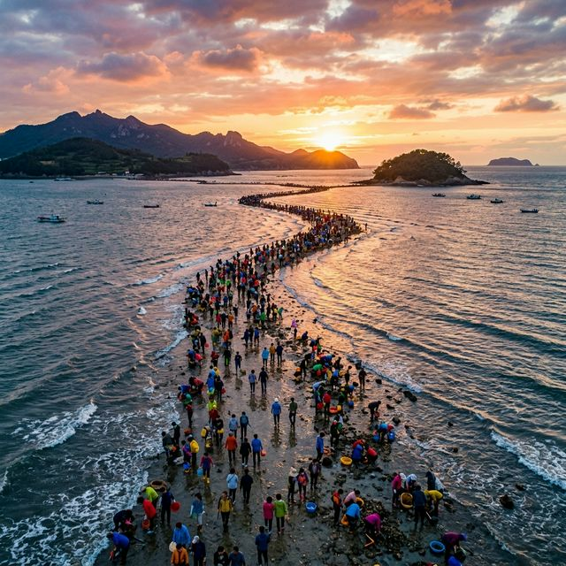
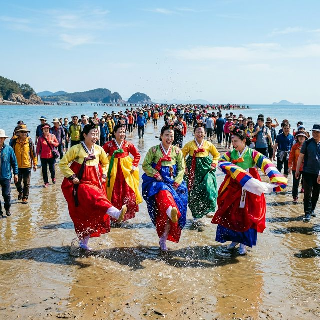

올해 진도 신비의 바다길 축제는 2026년 4월 중순, 조수 간만의 차가 가장 커지는 사리 기간에 맞춰 화려한 막을 올립니다. 이 축제는 단순히 자연현상을 구경하는 것을
넘어, 진도군민들이 수천 년간 지켜온 민속 예술을 집대성하여 보여주는 종합 문화 축제입니다. 바닷길이 열리는 시간은 하루에 약 1시간에서 1시간 30분 정도로 매우 짧기 때문에, 방문 전 시간 계획을
철저히 세우는 것이 무엇보다 중요합니다.
2026년 축제에서는 '바닷길을 건너 세계로'라는 주제로 외국인 관광객들을 위한 글로벌 글로벌 체험 구역이 대폭 강화되었습니다. 바닷가 광장에는 거대한 뽕할머니 조형물이 세워지고, 축제 기간 내내 진도
씻김굿, 남도들노래 등 국가무형문화재 공연이 끊이지 않고 이어집니다. 한국의 정서가 가장 응축된 곳, 진도에서만 느낄 수 있는 깊은 울림을 현장에서 직접 경험해 보시길 바랍니다.

신비의 바다길을 걷기 위한 절대 조건은 바로 '물때'입니다. 바닷물이 가장 낮게 빠지는 간조 시간 전후 30분이 바닷길이 가장 선명하게 드러나는 골든타임이죠. 2026년
축제 기간의 물때는 국립해양조사원의 예측 데이터를 기반으로 관리되며, 축제 공식 홈페이지와 현장 안내판을 통해 실시간으로 공지됩니다. 날짜별로 바닷길이 열리는 시간이 밤늦거나 새벽일 수도 있으니 반드시
출발 전 확인이 필요합니다.
바닷길이 열리기 시작하면 알림 소리와 함께 본격적인 보행이 가능해집니다. 이때 안전 요원들의 안내에 따라 질서 있게 진입해야 하며, 만조 시간이 다가오면 신속하게 뭍으로 돌아와야 합니다. 2026년에는
바닷길 곳곳에 스마트 안전 센서가 설치되어 물이 차오르는 속도를 실시간으로 감지하고 관람객들에게 경고를 보내주는 시스템이 도입되어 한층 안전한 관람이 가능해졌습니다.
바다길이 열리는 곳에는 간절한 기도가 서린 뽕할머니 전설이 전해 내려옵니다. 옛날 진도 회동 마을에 호랑이가 나타나 마을 사람들이 모도로 피신했는데, 홀로 남겨진
뽕할머니가 가족들을 보고 싶어 용왕님께 비도를 드린 끝에 바다길이 열렸다는 이야기죠. 할머니가 가족들을 만나고 숨을 거둔 자리에는 지금도 그 뜻을 기리는 사당과 동상이 세워져 있습니다.
축제에서는 이 전설을 바탕으로 한 창작 무용과 연희극이 펼쳐집니다. 뽕할머니의 간절한 소망이 바다를 가른 것처럼, 현대인들에게도 간절한 바람이 이루어지는 긍정의 기운을
전하는 특별한 퍼포먼스입니다. 바닷길을 걷기 전 이 이야기를 먼저 접한다면, 단순히 땅을 밟는 것이 아니라 할머니의 사랑과 기적의 에너지를 함께 느껴보는 더욱 의미 있는 시간이 될 것입니다.

진도는 '예향(藝鄕)'이라는 이름에 걸맞게 수많은 무형문화재를 보유하고 있습니다. 축제 기간에는 진도 아리랑, 강강술래, 진도 북놀이 등이 바닷길 광장에서 쉼 없이
펼쳐집니다. 특히 수천 명의 관람객이 손에 손을 잡고 원을 그리며 도는 강강술래는 축제의 분위기를 최고조로 끌어올리는 하이라이트입니다. 한국적인 리듬과 춤사위가 주는 흥겨움에 취해 외국인 관광객들도
어느새 어우러지는 광경은 매우 인상적입니다.
2026년에는 관람객이 직접 북을 쳐보거나 민요를 배워보는 '1일 소리꾼 체험' 프로그램이 신설되었습니다. 구슬픈 선율 속에 담긴 우리 민족의 한과 흥을 직접 목소리로 내어 보며 진도의 예술적 혼을
느껴보세요. 공연장 주변에는 진도 무형문화재 전시관도 운영되어, 각종 악기와 의상 등을 가까이서 관찰하고 역사를 공부할 수 있는 기회도 제공됩니다.
바닷길이 열리면 드러나는 것은 땅뿐만이 아닙니다. 평소 바다 밑바닥이었던 곳에는 각종 미역, 톳, 바지락, 낙지 등 싱싱한 해산물들이 지천에 널려 있죠. 관람객들은 미리
준비한 장화를 신고 바구니를 든 채 바다의 선물을 채취하는 재미에 푹 빠지게 됩니다. 아이들에게는 이보다 더 좋은 자연 체험 현장이 없을 만큼 살아있는 바다 생태계를 오감으로 느낄 수 있는
순간입니다.
채취한 해산물은 현장에서 직접 손질해 주거나, 인근 식당에서 즉석요리로 즐길 수 있는 연계 서비스도 제공됩니다. 2026년 축제에서는 '최고의 어부 찾기' 대회가 열려 가장 많은 조개를 캔 가족에게
진도 특산물 세트를 증정하는 이벤트도 진행됩니다. 자연이 준 풍요로움을 직접 손으로 수확하며 바다의 소중함을 다시 한번 생각해보는 뜻깊은 경험을 놓치지 마세요.
진도 하면 역시 천연기념물 제53호인 진도개를 빼놓을 수 없습니다. 축제장 한편에서는 영특한 진도개들의 묘기 쇼와 경주 대회가 수시로 열립니다. 주인의 말을 찰떡같이
알아듣고 장애물을 넘거나 춤을 추는 진도개들의 모습은 관람객들의 박수갈채를 이끌어내죠. 진도개의 우수성과 충성심에 관한 이야기도 해설사의 설명을 통해 재미있게 들을 수 있습니다.
어른들을 위한 즐거움으로는 진도 홍주 시음회가 있습니다. 선명한 붉은 빛깔이 매력적인 홍주는 지초로 빚어 풍미가 깊고 뒤끝이 깔끔하기로 유명합니다. 소주 고리에 방울방울
맺히는 전통 제조 방식도 직접 관람할 수 있으며, 갓 짜낸 홍주의 알싸한 맛은 여행의 피로를 단번에 날려줍니다. 진도개와 홍주, 진도만의 자부심이 담긴 두 가지 명물을 꼭 경험해 보시길 바랍니다.
진도로 진입하기 위해 반드시 건너야 하는 진도대교 아래로는 거센 물살이 흐르는 '울돌목'이 있습니다. 이순신 장군이 명량대첩의 승리를 일궈냈던 바로 그곳이죠. 바닷길 축제
관람 전후로 울돌목의 소용돌이치는 물결을 내려다보며 역사의 현장을 느껴보는 코스를 추천합니다. 다리 위에서 내려다보는 바다는 마치 살아있는 생명체처럼 포효하며 흐르는데, 그 소리만으로도 압도적인 위엄을
느낄 수 있습니다.
2026년에는 울돌목 상공을 가로지르는 명량해상케이블카의 야간 운행이 활성화되어, 바닷길 축제장의 화려한 야간 조명과 진도대교의 야경을 한눈에 담을 수 있는 스페셜 코스가
인기입니다. 케이블카 바닥이 유리로 된 기종을 선택하면 울돌목의 소용돌이를 수직으로 내려다보는 아찔한 경험도 가능합니다. 역사적 승리의 현장에서 즐기는 짜릿한 액티비티는 여행에 깊이를 더해줄 것입니다.
진도의 청정 바다에서 자란 진도 전복은 크기가 크고 식감이 쫄깃해 명품으로 대접받습니다. 축제장 주변 식당 어디서든 싱싱한 전복회나 전복 죽, 구이 등을 저렴한 가격에
맛볼 수 있습니다. 또한, 진도는 국내 최대의 울금 생산지이기도 합니다. 노란 빛깔의 울금이 들어간 '울금 비빔밥'이나 '울금 수육'은 보약 한 그릇을 먹는 것 같은 든든함을 선물합니다.
먹거리 장터에서 파는 진도 김과 미역도 잊지 말고 구매해야 할 필수 품목입니다. 바닷길 축제 기간에는 산지 직송으로 갓 수확한 건어물들을 시장가보다 훨씬 저렴하게
판매합니다. 2026년에는 '진도 맛 지도' 앱을 통해 현 위치 주변의 맛집을 쉽게 찾고 예약할 수 있는 서비스가 운영되고 있으니, 긴 대기 시간 없이 진도의 맛을 만끽해 보시길 바랍니다.
바닷길을 걷기 위해서는 복장이 가장 중요합니다. 바닥이 미끄러우므로 일반 신발보다는 장화나 아쿠아슈즈가 필수입니다. 축제장 입구에서 대여할 수도 있지만, 방문객이 많아
사이즈가 부족할 수 있으니 미리 챙겨오시는 것을 권장합니다. 또한, 해풍이 강하게 불 수 있으므로 봄날이라도 얇은 바람막이나 점퍼를 준비하는 것이 체온 유지를 위해 좋습니다.
야간에 바닷길이 열리는 경우를 대비해 소형 랜턴을 준비하시면 발밑을 확인하는 데 도움이 됩니다. 축제장 곳곳에 물품 보관소와 샤워 시설, 발 씻는 곳이 잘 마련되어 있으니
갯벌 체험 후에도 깔끔하게 마무리할 수 있습니다. 2026년에는 다회용 장화 대여 시스템이 강화되어 환경오염을 줄이는 데 앞장서고 있으니 깨끗하게 사용하고 반납하는 매너를 보여주세요.
하루에 단 한두 번, 하늘이 허락해야만 열리는 기적의 길. 진도 신비의 바다길은 인간의 의지가 아닌 자연의 섭리에 몸을 맡기는 겸손함을 배우게 합니다. 2026년 4월,
거친 파도를 가르고 나타난 황금빛 길 위에서 여러분은 어떤 소원을 빌고 싶으신가요? 뽕할머니의 간절함이 기적을 만들었듯, 여러분의 발걸음 하나하나에도 희망과 행복이 가득 차오르기를 진심으로
기원합니다.
진도의 깊은 소리와 푸른 바다, 그리고 따뜻한 사람들의 인심이 어우러진 이번 축제는 여러분의 인생 여행지 리스트에 소중한 한 페이지를 장식할 것입니다. 바다가 갈라지는 신비로운 장관 속에서 일상의
스트레스를 씻어내고, 자연이 주는 무한한 감동을 가슴 속 깊이 담아 가시길 바랍니다. 축제의 현장에서 뵙기를 고대하겠습니다!